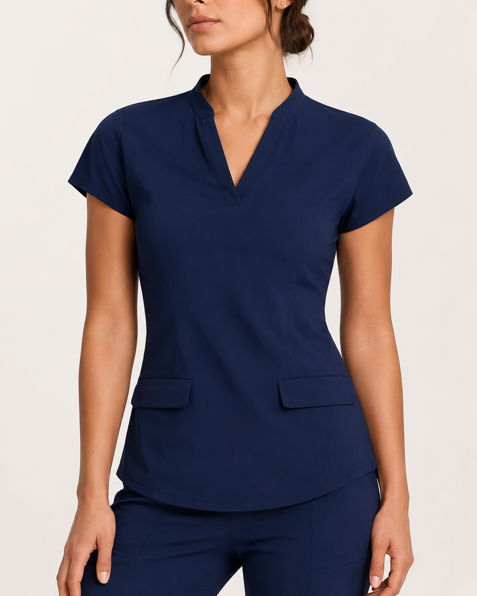
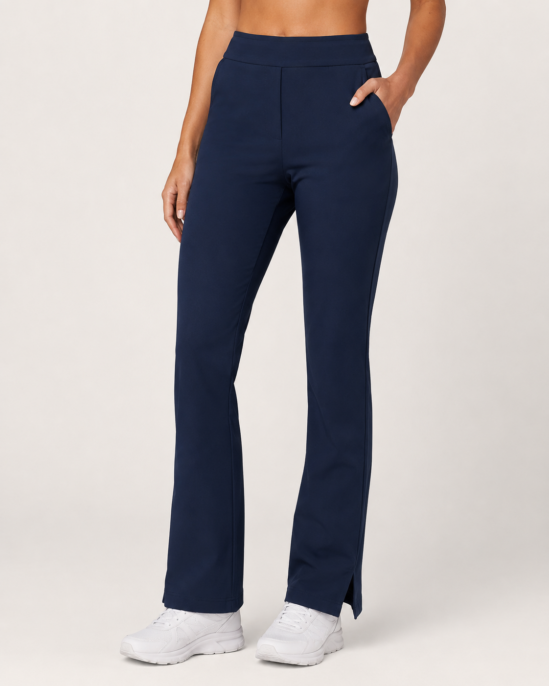
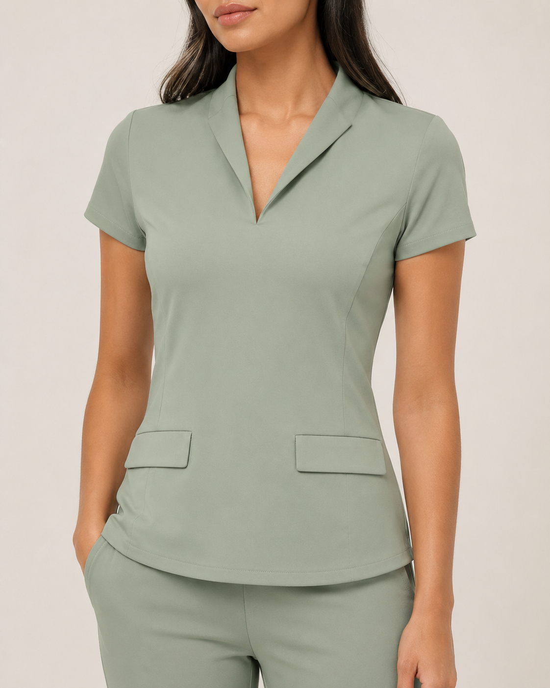
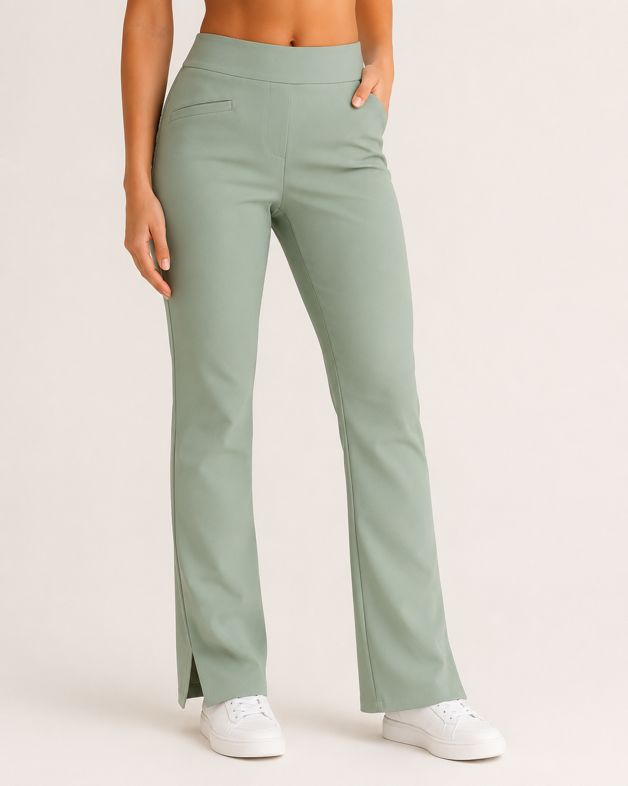
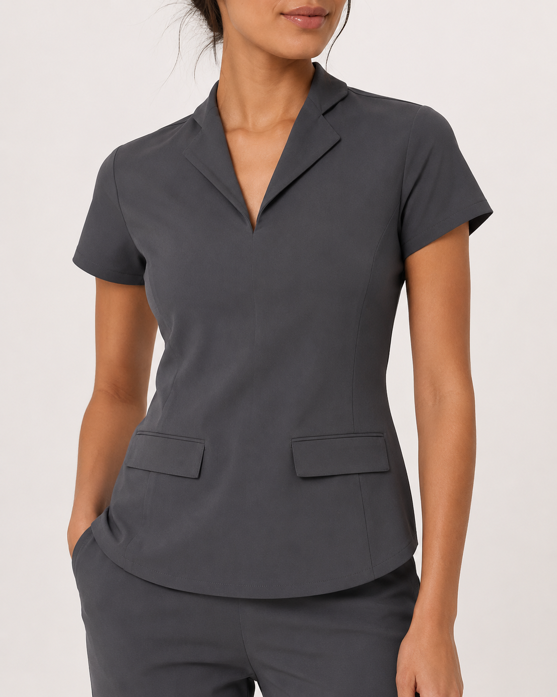
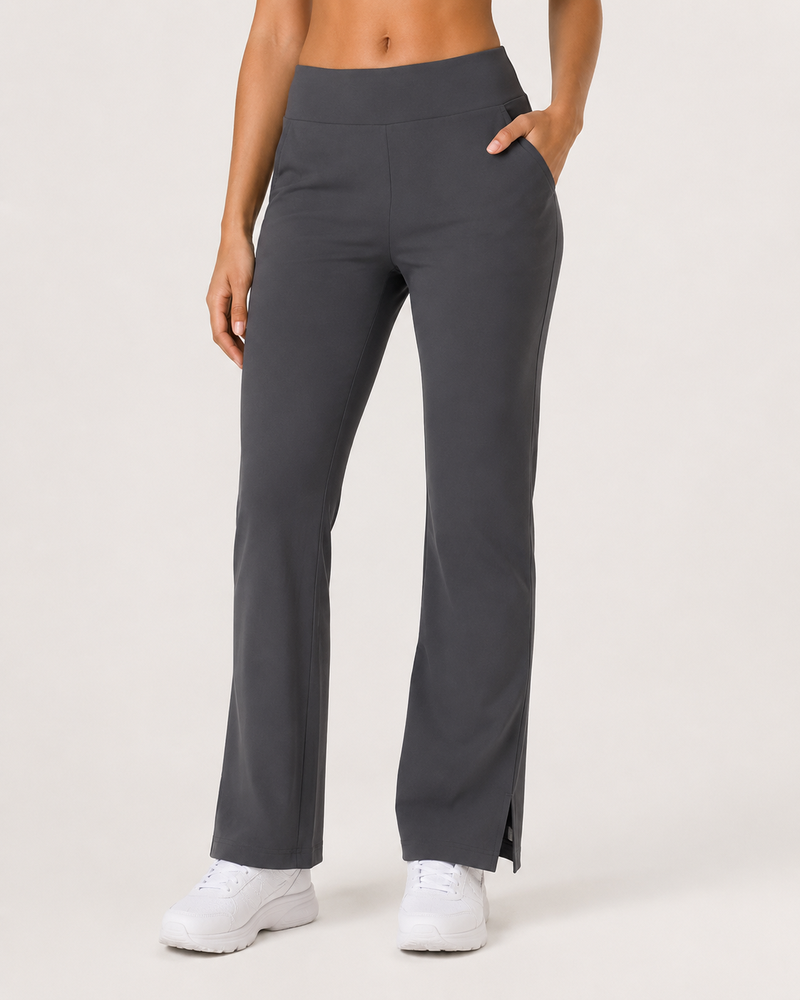
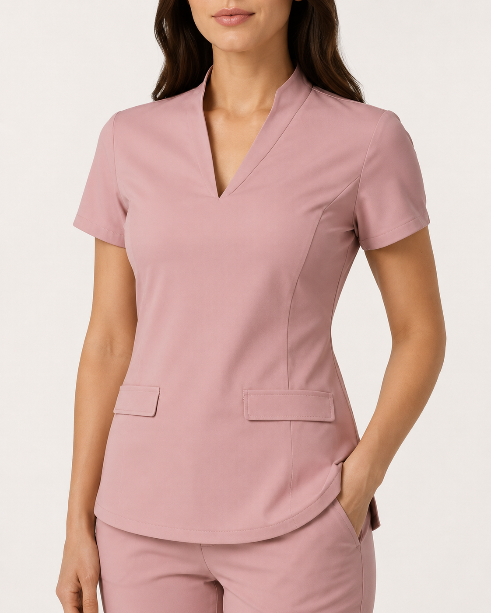
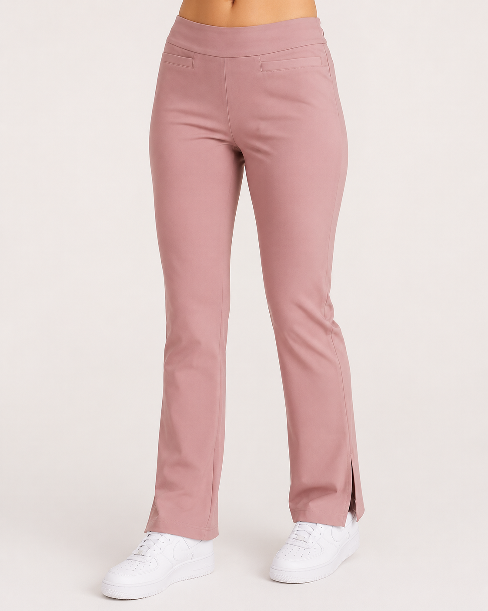
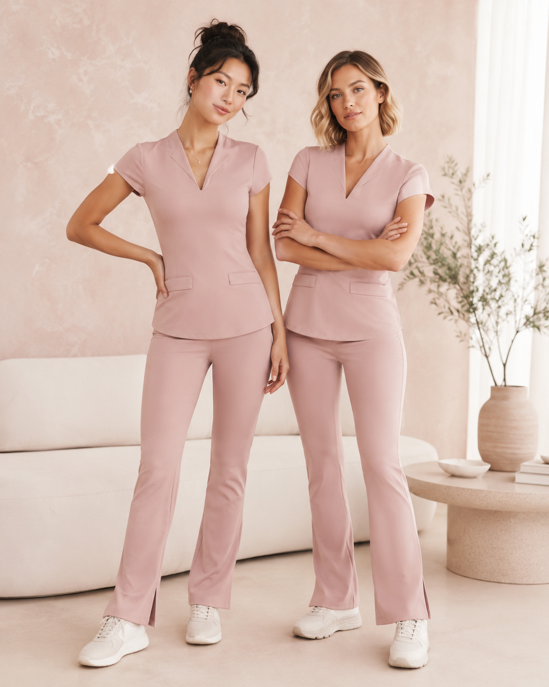

góraBluza medyczna
Fitted basic z krótkim rękawem, czystą linią dekoltu, modelującymi przeszyciami i subtelnymi kieszeniami.
notch necklinekrój pod sylwetkęlekki wygląd
Wygodne komplety medyczne dla studentek i młodych kobiet w medycynie. Na uczelnię, praktyki, gabinet i pierwsze dyżury — bez kroju, który wygląda jak worek.
Bluza + spodnie · 3–4 kolory · rabat dla zapisanych · możliwość zamówień grupowych
Scrub ma działać w realnym ruchu: przy schylaniu, chodzeniu, siedzeniu i długim dniu poza domem.
Na stronie pokazujemy realny skład, wymiary i zasady wymiany.
Tabela produktu, zdjęcia na sylwetkach i poradnik wyboru.
Jedna dopracowana kolekcja zamiast chaotycznego sklepu.
Rabat studencki oraz opcja zamówień grupowych.
To nie jest jeszcze ogromny sklep. To MVP, które pomaga sprawdzić realne zainteresowanie, rozmiary i kolory przed większą produkcją.
Zostawiasz e-mail, kierunek, rozmiar i preferowany kolor.
Pomagasz wybrać kolory i rozmiary pierwszej produkcji.
Osoby z listy otrzymają wcześniejszy dostęp i rabat startowy.
Jeśli kolekcja ruszy, kupujesz jako jedna z pierwszych.
Na start: bluza medyczna, spodnie i komplet w bazowych kolorach.

góraFitted basic z krótkim rękawem, czystą linią dekoltu, modelującymi przeszyciami i subtelnymi kieszeniami.

spodnieProsty, lekko rozszerzany krój z wygodnym pasem, kieszeniami i rozcięciem przy dole nogawki.
Bluza + spodnie w gotowym zestawie. Najprostszy wybór na pierwsze praktyki, gabinet lub start pracy.
Każdy kolor ma osobne zdjęcie góry i spodni, żeby łatwiej porównać odcień, krój i detale.
Bezpieczny wybór na uczelnię i praktyki.

góra
spodnieSpokojny kolor do gabinetu, fizjo i beauty.

góra
spodnieProfesjonalny basic na co dzień.

góra
spodnieKobiecy, miękki wizualnie odcień.
Kolory startowe dobrane tak, żeby działały na uczelni, w gabinecie i w codziennej pracy.

Nie tworzymy kolejnego ogólnego sklepu. Scrubee startuje z myślą o konkretnym momencie: pierwsze praktyki, pierwsze wejście do gabinetu, pierwsze dni w pracy.
pierwsze zajęcia kliniczne, praktyki i dyżury
ćwiczenia, praktyki i pierwsza praca
krój do ruchu i pracy z pacjentem
estetyczny wygląd do gabinetu beauty
profesjonalny komplet do gabinetu
praktyczny scrub na kliniki i zajęcia
W finalnej wersji ta sekcja powinna pokazywać konkret: skład, gramaturę, elastan, instrukcję prania i zdjęcia detali.
Pokaż, jak materiał wygląda po kilku praniach.
Wpisz realny skład, gramaturę i pielęgnację.
Dodaj zdjęcia w świetle dziennym.
Pokaż siedzenie, schylanie i podnoszenie rąk.
Dekolt, przeszycia, kieszenie i dopasowanie góry.
Pas, kieszenie, linia nogawki i rozcięcie przy dole.
Największa obawa przy pierwszym scrubsie to rozmiar. Landing musi pomagać wybrać dobrze i zmniejszać ryzyko wymiany.
W finalnej wersji wpisz realne wymiary produktu po odszyciu próbek.
| Rozmiar | Biust | Talia | Biodra |
|---|---|---|---|
| XS | uzupełnij | uzupełnij | uzupełnij |
| S | uzupełnij | uzupełnij | uzupełnij |
| M | uzupełnij | uzupełnij | uzupełnij |
| L | uzupełnij | uzupełnij | uzupełnij |
| XL | uzupełnij | uzupełnij | uzupełnij |
Na starcie nie trzeba pisać „tysiące klientek”. Lepiej pokazać proces: testy kroju, ankiety kolorów, zgłoszenia testerek i realne zdjęcia próbek.
„Szukamy pierwszych testerek kolekcji. Chcesz przymierzyć prototyp, pomóc wybrać kolor i dostać kod na premierę?”
Scrubee może rozwijać się też jako miejsce z materiałami dla studentek: checklisty na praktyki, fiszki, mini kursy z anatomii i proste poradniki na pierwszy rok.
anatomia, podstawy, plan nauki
pierwsze praktyki i rzeczy do torby
scrub + materiały + rabat
Dołącz do listy i odbierz wcześniejszy dostęp do kolekcji startowej, kod rabatowy na pierwszy komplet oraz możliwość głosowania na kolory pierwszej produkcji.
Po co tyle pytań w formularzu?
Dzięki temu przed produkcją widać, jakie rozmiary, kolory i grupy klientek mają największy potencjał.
Zapisz się po kod startowy i wcześniejszy dostęp. Bez spamu — tylko premiera, kolory, rozmiary i pre-order.
Ta sekcja usuwa obiekcje: rozmiar, wymiana, pre-order, kolory, zamówienia grupowe i zastosowanie na praktykach.
Tak — kolekcja startowa powstaje z myślą o studentkach i młodych kobietach, które potrzebują pierwszego kompletu na uczelnię, praktyki, gabinet lub pierwsze dyżury.
Na stronie znajdziesz tabelę wymiarów produktu oraz prostą instrukcję, jak porównać je z ubraniem, które już masz.
Tak, łatwa wymiana rozmiaru jest jednym z założeń marki. Dokładne zasady wymiany i zwrotów pojawią się przed startem sprzedaży.
Tak. Plan zakłada sprzedaż bluzy, spodni oraz kompletu w lepszej cenie.
Tak. Osoby zapisane na listę otrzymają wcześniejszy dostęp do kolekcji i kod rabatowy.
Na tym etapie to landing MVP z listą oczekujących. Sprzedaż może ruszyć później jako limitowany pre-order.
Dołącz do listy, odbierz wcześniejszy dostęp i pomóż wybrać kolory pierwszej kolekcji Scrubee.